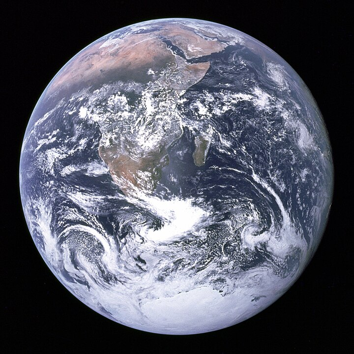

La ecología es la rama de la biología que estudia las relaciones de los diferentes seres vivos entre sí y su relación con el entorno: «la biología de los ecosistemas». Estudia cómo estas interacciones entre los organismos y su ambiente afectan a propiedades como la distribución o la abundancia. En el ambiente se incluyen las propiedades físicas y químicas que pueden ser descritas como la suma de factores abióticos locales, como el clima y la geología, y los demás organismos que comparten ese hábitat (factores bióticos). Los ecosistemas están compuestos de partes que interactúan dinámicamente entre ellas junto con los organismos, las comunidades que integran, y también los componentes no vivos de su entorno. Los procesos del ecosistema, como la producción primaria, la pedogénesis, el ciclo de nutrientes, y las diversas actividades de construcción del hábitat, regulan el flujo de energía y materia a través de un entorno. Estos procesos se sustentan en los organismos con rasgos específicos históricos de la vida, y la variedad de organismos que se denominan biodiversidad. La visión integradora de la ecología plantea el estudio científico de los procesos que influyen en la distribución y abundancia de los organismos, así como las interacciones entre los organismos y la transformación de los flujos de energía. La ecología es un campo interdisciplinario que incluye a la biología y las ciencias de la Tierra. La ecología evolucionó a partir de la historia natural de los antiguos filósofos griegos, como Hipócrates, Aristóteles y Teofrasto, sentando las bases de la ecología en sus estudios sobre la historia natural. Las bases posteriores para la ecología moderna se establecieron en los primeros trabajos de los fisiólogos de plantas y animales. Los conceptos evolutivos sobre la adaptación y la selección natural se convirtieron en piedras angulares de la teoría ecológica moderna transformándola en una ciencia más rigurosa en el siglo xix. Está estrechamente relacionada con la biología evolutiva, la genética y la etología. La comprensión de cómo la biodiversidad afecta a la función ecológica es un área importante enfocada en los estudios ecológicos. 
Un ecosistema es un sistema biológico constituido por una comunidad de organismos vivos (biocenosis) y el medio físico donde se relacionan (biotopo). Se trata de una unidad compuesta de organismos interdependientes que comparten el mismo hábitat.Los ecosistemas suelen formar una serie de cadenas que muestran la interdependencia de los organismos dentro del sistema.También se puede definir así: «Un ecosistema consiste de la comunidad biológica de un lugar y de los factores físicos y químicos que constituyen el ambiente abiótico»">.Se considera que los factores abióticos y bióticos están ligados por las cadenas tróficas o sea el flujo de energía y nutrientes en los ecosistemas. Este concepto, que fue introducido en 1935 por el ecólogo inglés A. G. Tansley, tiene en cuenta las complejas interacciones entre los organismos (por ejemplo plantas, animales, bacterias, protistas y hongos) que forman la comunidad (biocenosis) y los flujos de energía y materiales que la atraviesan. El término ecosistema fue acuñado en 1930 por Roy Clapham para designar el conjunto de componentes físicos y biológicos de un entorno. El ecólogo británico Arthur Tansley refinó más tarde el término, y lo describió como «El sistema completo, [...] incluyendo no sólo el complejo de organismos, sino también todo el complejo de factores físicos que forman lo que llamamos medio ambiente».Tansley consideraba los ecosistemas no simplemente como unidades naturales sino como «aislamientos mentales» («mental isolates»).Tansley más adelante definió la extensión espacial de los ecosistemas mediante el término «ecotopo» («ecotope»). Fundamental para el concepto de ecosistema es la idea de que los organismos vivos interactúan con cualquier otro elemento en su entorno local. Eugene Odum, uno de los fundadores de la ecología, declaró: «Toda unidad que incluye todos los organismos (es decir: la “comunidad”) en una zona determinada interactuando con el entorno físico de tal forma que un flujo de energía conduce a una estructura trófica claramente definida, diversidad biótica y ciclos de materiales (es decir, un intercambio de materiales entre las partes vivientes y no vivientes) dentro del sistema es un ecosistema».El concepto de ecosistema humano se basa en desmontar la dicotomía humano/naturaleza y en la premisa de que todas las especies están ecológicamente integradas unas con otras, así como con los componentes abióticos de su biotopo.
La evolución biológica es el conjunto de cambios en caracteres fenotípicos y genéticos de poblaciones biológicas a través de generaciones. Dicho proceso ha originado la diversidad de formas de vida que existen sobre la Tierra a partir de un antepasado común. Los procesos evolutivos han producido la biodiversidad en cada nivel de la organización biológica, incluyendo los de especie, población, organismos individuales y molecular (evolución molecular), moldeados por formaciones repetidas de nuevas especies (especiación), cambios dentro de las especies (anagenesis) y desaparición de especies (extinción).Los rasgos morfológicos y bioquímicos son más similares entre las especies que comparten un ancestro común más reciente y pueden usarse para reconstruir árboles filogenéticos.El registro fósil muestra rápidos momentos de especiación intercalados con periodos relativamente largos de estasis mostrando pocos cambios evolutivos durante la mayor parte de su historia geológica (equilibrio puntuado).Toda la vida en la Tierra procede de un último antepasado común universal que existió hace aproximadamente 4350 millones de años. La palabra «evolución» se utiliza para describir los cambios y fue aplicada por primera vez en el siglo xviii por un biólogo suizo, Charles Bonnet, en su obra Consideration sur les corps organisés.No obstante, el concepto de que la vida en la Tierra evolucionó a partir de un ancestro común ya había sido formulado por varios filósofos griegos,y la hipótesis de que las especies se transforman continuamente fue postulada por numerosos científicos de los siglos XVIII y XIX, a los cuales Charles Darwin citó en el primer capítulo de su libro El origen de las especies.Algunos filósofos griegos antiguos contemplaron la posibilidad de cambios en los organismos a través del tiempo. Los naturalistas Charles Darwin y Alfred Russel Wallace propusieron de forma independiente en 1858 que la selección natural era el mecanismo básico responsable del origen de nuevas variantes genotípicas y en última instancia, de nuevas especies.Sin embargo, fue el propio Darwin en El origen de las especies,quien sintetizó un cuerpo coherente de observaciones y profundizó el mecanismo de cambio llamado selección natural, lo que consolidó el concepto de la evolución biológica hasta convertirlo en una verdadera teoría científica.Anteriormente, el concepto de selección natural ya había sido aportado en el siglo ix por Al-Jahiz (776-868), en su Libro de los animales, con postulados claves sobre la lucha por la supervivencia de las especies, y la herencia de características exitosas mediante reproducción. Desde la década de 1940 la teoría de la evolución combina las propuestas de Darwin y Wallace con las leyes de Mendel y otros avances posteriores en la genética; por eso se la denomina síntesis moderna o «teoría sintética».Según esta teoría, la evolución se define como un cambio en la frecuencia de los alelos de una población a lo largo de las generaciones. Este cambio puede ser causado por diferentes mecanismos, tales como la selección natural, la deriva genética, la mutación y la migración o flujo genético. La teoría sintética recibe en la actualidad una aceptación general de la comunidad científica, aunque también algunas críticas como el hecho de no incorporar el papel que tiene la construcción de nicho y la herencia extragenética. Los avances de otras disciplinas relacionadas, como la biología molecular, la genética del desarrollo o la paleontología han enriquecido la teoría sintética desde su formulación, en torno a 1940. En el siglo xix, la idea de que la vida había evolucionado fue un tema de intenso debate académico centrado en las implicaciones filosóficas, sociales y religiosas de la evolución. La evolución como propiedad inherente a los seres vivos no es materia de debate en la comunidad científica dedicada a su estudio;sin embargo, los mecanismos que explican la transformación y diversificación de las especies se hallan bajo intensa y continua investigación científica, surgiendo nuevas hipótesis sobre los mecanismos del cambio evolutivo basadas en datos empíricos tomados de organismos vivos. Los biólogos evolutivos han continuado estudiando varios aspectos de la evolución mediante la formulación de hipótesis, así como la construcción de teorías basadas en evidencia de campo o laboratorio y en datos generados por los métodos de la biología matemática y teórica. Sus descubrimientos han influido no solo en el desarrollo de la biología, sino en muchos otros campos científicos e industriales, incluidos la agricultura, la medicina y las ciencias de la computación.